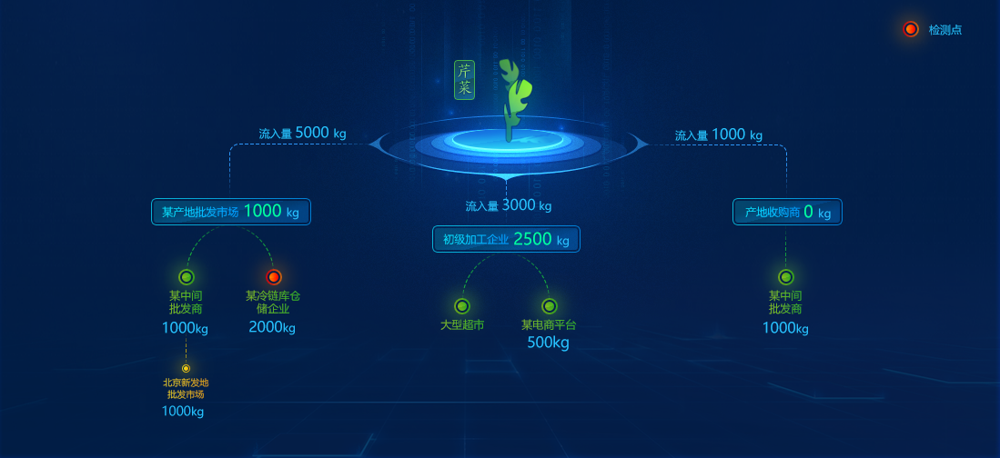

农产品检测批次追溯预警
山东
时间：
- 全国
- 山东
- 50批次以上
- 10-50批次
- 10批次以下
烟台农产品预警批次检测项目
烟台预警批次检测样本品种
农产品检测批次种植对象和品种预警列表
| 批次号 | 检测机构 | 品种 | 涉及样品量 | 种植对象 | 检测日期 | 检测项目 | 预警级别 |
|---|---|---|---|---|---|---|---|
| 2016031B | 地市级农产品质检机构 | 芹菜 | 512公斤 | 某农户 | 2016-11-04 | 农药残留 | 红色预警 |
| 2016032B | 地市级农产品质检机构 | 黄瓜 | 266公斤 | 某农户 | 2016-11-04 | 农药残留 | 红色预警 |
| 2016033B | 县级农产品质检机构 | 大蒜 | 234公斤 | 某农户 | 2016-11-04 | 农药残留 | 红色预警 |
面源污染影响品种流向预警
